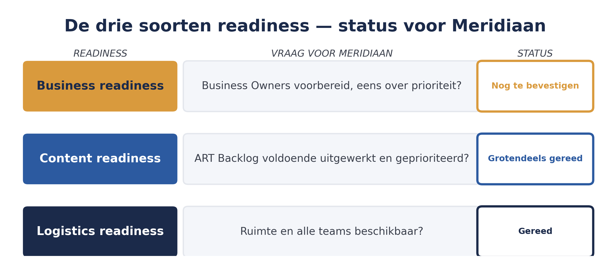
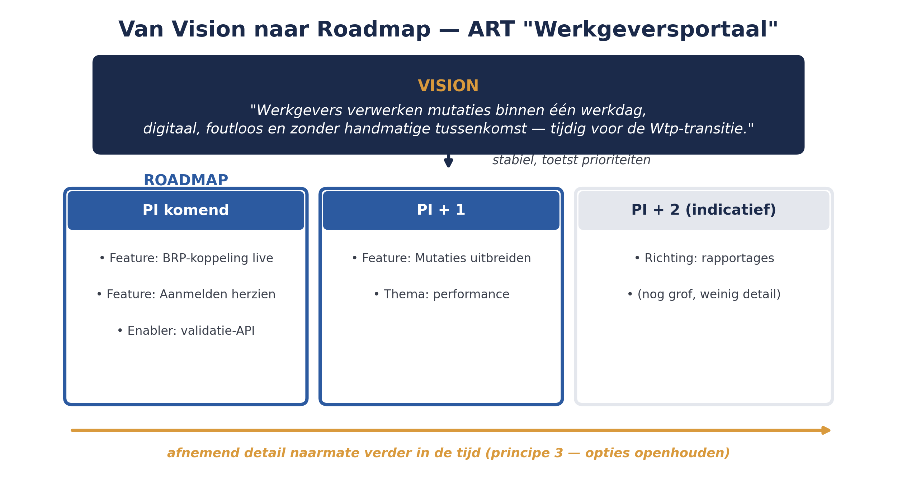

Deel 8 behandelt PI Planning zelf: het tweedaagse event waarin de hele ART gezamenlijk plant. Maar PI Planning slaagt of mislukt grotendeels op basis van wat daarvóór gebeurt. Een ART die ongepland een zaal in loopt, komt er niet levend uit. Dit deel behandelt de voorbereiding: readiness op drie vlakken, en de rol van visie en roadmap.
5secties
±1,5udagdeel + huiswerk
5controlevragen
3soorten readiness
Positionering. Deze cursus is een voorbereiding op de certificeringen SAFe Agilist (SA) en SAFe Practitioner (SP) van Scaled Agile, en uitdrukkelijk geen vervanging van het officiële SAFe-curriculum — dat wordt uitsluitend aangeboden via geautoriseerde Scaled Agile Partners. Voor terminologie en structuur volgen wij SAFe 6.0, de actuele versie van het Core-raamwerk.
Niveau 1: ➊ Waarom schalen misgaat → ➋ Lean-Agile mindset → ➌ Lean-Agile leiderschap → ➍ Agile teams en de ART → ➎ Waardestromen en ART-ontwerp → ➏ ART Backlog & WSJF → ➐ PI Planning voorbereiden (hier) → ➑ PI Planning uitvoeren → ➒ AI-Native I → ➓ Examentraining + capstone
01
Drie soorten readiness
⏱ 15 min
Scaled Agile onderscheidt drie voorwaarden die vervuld moeten zijn voordat een ART aan PI Planning kan beginnen:
Business readiness — zijn de Business Owners voorbereid en beschikbaar? Hebben zij een helder beeld van de prioriteiten die zij tijdens PI Planning gaan communiceren?
Content readiness — is de ART Backlog (deel 6) voldoende uitgewerkt? Zijn de belangrijkste features beschreven, geprioriteerd met WSJF, en op hoofdlijnen geschat?
Logistics readiness — zijn de praktische randvoorwaarden geregeld: ruimte (fysiek of virtueel), aanwezigheid van alle teams, de juiste tooling om gezamenlijk te plannen?

Figuur 7-1 — de drie soorten readiness als checklist, met de Meridiaan-status ernaast
Bij WGP 2.0 ontbrak feitelijk elk van deze drie: er was geen helder, gedeeld beeld van prioriteiten bij de opdrachtgevers, geen uitgewerkte en geprioriteerde lijst van werk voorafgaand aan de bouw, en geen gezamenlijk planningsmoment waarop alle betrokken partijen tegelijk aanwezig waren.
Controlevraag
Uit Werkboek deel 7, Opdracht 7.1 — readiness beoordelen
1Noem de drie soorten readiness die voorafgaand aan PI Planning nodig zijn, en wat ontbrak er bij WGP 2.0 op elk van deze drie?Toon antwoord
Business, content en logistics readiness. Bij WGP 2.0 ontbrak business readiness (geen helder, gedeeld beeld van prioriteiten bij de opdrachtgevers), content readiness (geen uitgewerkte en geprioriteerde lijst van werk voorafgaand aan de bouw) en logistics readiness (geen gezamenlijk planningsmoment waarop alle betrokken partijen tegelijk aanwezig waren).
02
De ART/Product Vision
⏱ 14 min
Voordat een ART kan plannen, moet er een gedeeld beeld zijn van waar de trein naartoe gaat. De Vision beschrijft, op een voor iedereen begrijpelijk niveau, welke toekomstige staat de ART nastreeft en waarom dat waardevol is — niet een gedetailleerd requirements-document, maar een kort, overtuigend beeld dat teams kunnen onthouden en waaraan ze prioriteiten kunnen toetsen.
Voor de ART "Werkgeversportaal" zou een eerste versie van de visie kunnen luiden: "Werkgevers kunnen alle personeelsmutaties die hun pensioenregeling raken binnen één werkdag digitaal, foutloos en zonder handmatige tussenkomst verwerken — tijdig gereed voor de Wtp-transitie." Deze visie is kort genoeg om te onthouden, concreet genoeg om aan te toetsen ("draagt deze feature hieraan bij, of niet?"), en legt de urgentie (Wtp) direct vast.
Controlevraag
Uit Werkboek deel 7, Opdracht 7.2 — zelf een visie schrijven
1Wat is het doel van de Vision, en waar toets je features aan?Toon antwoord
De Vision beschrijft, op een voor iedereen begrijpelijk niveau, welke toekomstige staat de ART nastreeft en waarom dat waardevol is. Het doel is een kort, overtuigend beeld dat teams kunnen onthouden. Je toetst features aan de vraag of ze bijdragen aan die visie — "draagt deze feature hieraan bij, of niet?"
03
De Roadmap
⏱ 13 min
Waar de visie het "waarheen" beschrijft, laat de Roadmap zien hoe de ART daar in de tijd naartoe werkt: een globaal overzicht van welke features in welke (aankomende) Program Increments worden opgepakt. Een roadmap voor meerdere PI's vooruit is bewust grof — verder in de tijd, minder detail, in lijn met principe 3 uit deel 2 (opties openhouden in plaats van te vroeg vastleggen). Alleen de eerstkomende PI wordt tijdens PI Planning zelf in detail uitgewerkt.

Figuur 7-2 — Vision en Roadmap voor de ART "Werkgeversportaal": van visiezin naar PI-voor-PI-overzicht
Controlevraag
Uit Werkboek deel 7, Opdracht 7.3 — Visie versus roadmap
1Wat is het verschil tussen de Vision en de Roadmap van een ART? Waarom wordt een roadmap bewust grover naarmate hij verder in de tijd kijkt?Toon antwoord
De Vision beschrijft het "waarheen": een kort, stabiel beeld van de toekomstige staat die de ART nastreeft. De Roadmap laat zien hoe de ART daar in de tijd naartoe werkt: een globaal overzicht van welke features in welke aankomende PI's worden opgepakt. Een roadmap is bewust grover naarmate hij verder vooruitkijkt, in lijn met principe 3 (opties openhouden in plaats van te vroeg vastleggen) — alleen de eerstkomende PI wordt tijdens PI Planning zelf in detail uitgewerkt.
04
Pre-PI Planning: management review
⏱ 15 min
In de dagen voorafgaand aan de eigenlijke PI Planning organiseert het ART-leiderschap (RTE, Product Management, System Architect/Engineering, Business Owners) doorgaans een voorbereidende sessie: een management review waarin bekende risico's, afhankelijkheden met andere delen van de organisatie en resterende knelpunten in de ART Backlog worden doorgenomen en, waar mogelijk, al opgelost. Het doel is niet om PI Planning zelf te vervangen, maar om te voorkomen dat het tweedaagse event vastloopt op vragen die vooraf al beantwoord hadden kunnen worden.
Voor Meridiaan betekent dit concreet: voorafgaand aan de eerste PI Planning van de ART "Werkgeversportaal" moet helder zijn of de BRP-koppeling (de enabler uit deel 6) technisch haalbaar is binnen de beoogde termijn, of de Business Owners het eens zijn over de relatieve prioriteit van de Wtp-deadline versus andere klantwensen, en of alle vijf (of, na het herontwerp uit deel 5, mogelijk vier) teams daadwerkelijk beschikbaar zijn op de geplande planningsdagen.
Controlevraag
Uit Werkboek deel 7, Zelftoets, vraag 5
1Wat is het doel van de pre-PI Planning management review?Toon antwoord
Bekende risico's, afhankelijkheden met andere delen van de organisatie en resterende knelpunten in de ART Backlog vooraf doornemen en, waar mogelijk, al oplossen — niet om PI Planning zelf te vervangen, maar om te voorkomen dat het tweedaagse event vastloopt op vragen die vooraf al beantwoord hadden kunnen worden.
05
Terug naar Meridiaan: readiness-check
⏱ 13 min
Een praktische manier om de drie soorten readiness te beoordelen, is een eenvoudige checklist die het ART-leiderschap enkele weken voor PI Planning doorloopt:
Readiness
Vraag voor Meridiaan
Status (voorbeeld)
Business
Zijn de Business Owners (hoofd Klantcontact, hoofd Operations) beschikbaar voor beide planningsdagen en eens over de hoofdprioriteit?
Nog te bevestigen
Content
Is de ART Backlog uit deel 6 voldoende uitgewerkt en geprioriteerd?
Grotendeels gereed
Logistics
Is er een geschikte ruimte, en zijn alle teams (incl. eventuele externe partijen) beschikbaar?
Gereed
Deze checklist voorkomt dat Meridiaan pas tíjdens PI Planning ontdekt dat een cruciale voorwaarde niet was vervuld — precies het soort late verrassing dat bij WGP 2.0 telkens terugkeerde.
Kernbegrippen uit dit deel
Business, content en logistics readiness — de drie voorwaarden voor een geslaagde PI Planning.
Vision — het korte, gedeelde beeld van waar de ART naartoe werkt.
Roadmap — het globale overzicht van features over meerdere PI's, met afnemend detail naarmate het verder in de tijd ligt.
Pre-PI Planning (management review en problem solving) — de voorbereidende sessie waarin risico's en knelpunten vooraf worden doorgenomen.
Controlevragen
Uit Werkboek deel 7, Opdracht 7.4 en de Groepsoefening "Pre-PI Planning simuleren"
1Waarom is een readiness-checklist als deze nuttig, ook als de status op sommige onderdelen nog "nog te bevestigen" is?Toon antwoord
Omdat de checklist zichtbaar maakt wélke voorwaarde nog niet vervuld is, ruim vóórdat PI Planning zelf begint. Zo kan het ART-leiderschap dat gat nog dichten — precies het soort late verrassing voorkomen dat bij WGP 2.0 telkens terugkeerde, waar knelpunten pas tijdens de uitvoering aan het licht kwamen.
2Welke rol is tijdens de pre-PI Planning management review verantwoordelijk voor het delen van de status van technische enablers zoals de BRP-koppeling?Toon antwoord
De System Architect/Engineering-rol, als onderdeel van het ART-leiderschap (samen met RTE, Product Management en Business Owners) dat de pre-PI Planning-sessie organiseert.
Verder naar deel 8
Deel 8 behandelt PI Planning zelf: het tweedaagse event waarin de ART "Werkgeversportaal", nu goed voorbereid met Vision, Roadmap en readiness-check, voor het eerst gezamenlijk plant.